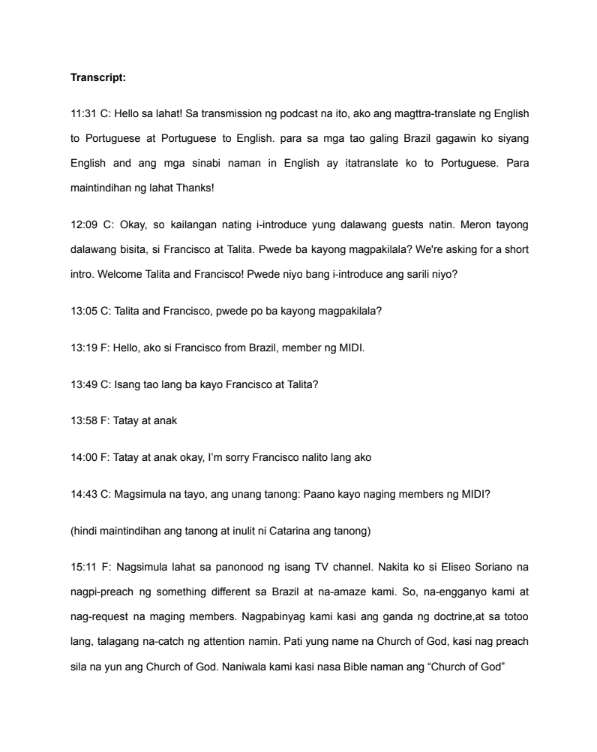

Deep Immersion Advantage
My extensive, self-driven immersion in each language provides a practical, nuanced understanding that goes beyond textbook knowledge.
I bridge communication gaps with dedicated translation services, ensuring your message is understood with clarity and cultural sensitivity across the languages I command.
Request Your Translation QuoteBeyond words, I focus on meaning and connection.
My extensive, self-driven immersion in each language provides a practical, nuanced understanding that goes beyond textbook knowledge.
I treat every project, big or small, with intense dedication and a keen eye for detail, ensuring accuracy and faithfulness to the source.
Understanding cultural context is key. I strive to deliver translations that are not just linguistically correct but also culturally appropriate.
Clear language pairs, practical content types, and honest limits before work begins.
From any of these source languages:
Other language pair combinations among these may be possible. Please inquire!
Follow the collaborative process that transformed a sensitive 3-hour Portuguese audio into an impactful Tagalog translation.
The journey began with an inquiry from a prospective client (details anonymized for confidentiality) seeking translation services for a podcast.
“Hello! I'd like to ask about your service fee for a translator. I have a podcast I'd like to have translated into Tagalog.”
Prospective Client
To understand the project's scope, the client shared the source material — a ~3-hour live Portuguese podcast episode featuring sensitive testimonies from ex-members of MCGI in Brazil (“Por que saí do MIDI” — Ep. 324).
“Could you please send the podcast? The complexity and duration will determine the scope. This looks like it could be challenging but I'm happy to try.”
Aljohn Polyglot
We discussed the specifics: only the Portuguese segments needed translation, and timestamps would be included for clarity. Given the length and my existing commitments, an estimated timeframe of 1–2 weeks was proposed. A project-based fee (equivalent to approx. 1000 PHP) was agreed upon, with a 50% downpayment to initiate the work.
“Okay sir, that sounds good.”
Client
“Great! To start, a 50% downpayment would be appreciated. Thank you!”
Aljohn Polyglot
The core of the project involved careful listening to capture the precise meaning, emotional tone, and cultural nuances. This was followed by accurate transcription of the Portuguese segments and then a culturally-aware Tagalog translation. The work was done progressively, with an update shared with the client part-way through.

Upon completion of the ~8-hour task, the final document was delivered. The client expressed satisfaction with the work and appreciation for the dedication involved.
“Salamat po ng marami... It's OK po, willing to wait naman po... naeenjoy ko naman ang pagtranslate kase ang ganda ng usapan.”
Thank you very much... It's OK, I was willing to wait... I actually enjoyed reading the translation because the conversation was so interesting.
Satisfied Client — details anonymized
The client also kindly granted permission to share this project as a case study, with their name and sensitive details kept confidential.
Here’s how we’ll work together to bring your content to a new audience.
Fill out the Google Form below with your project details and upload your files. Be as specific as possible!
I'll review your submission and email you within 1–2 working days with a quote, timeline, and payment details.
Upon your 50% downpayment, I’ll begin the translation, keeping you updated on the progress.
After the final 50% payment, you'll receive your meticulously translated files, ready to use.
Every audio/video project is quoted individually; text work starts from a clear baseline.
Use the secure Google Form below. I'm excited to help you connect with a wider audience!